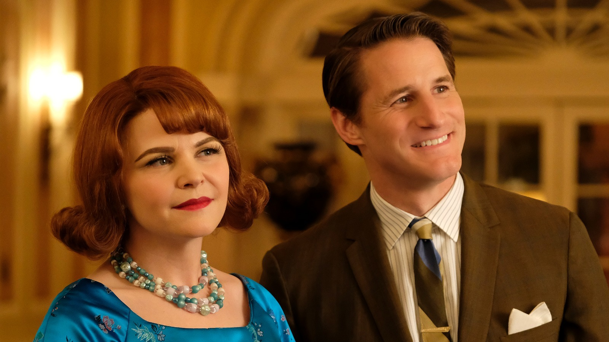
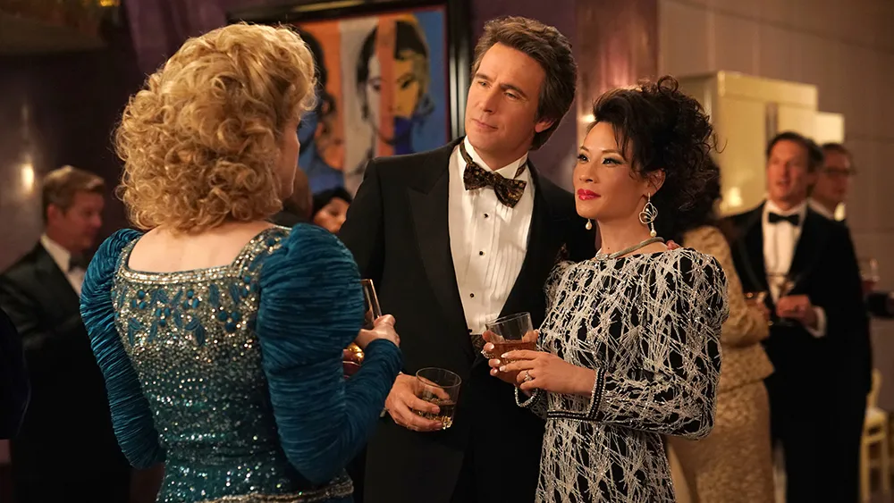
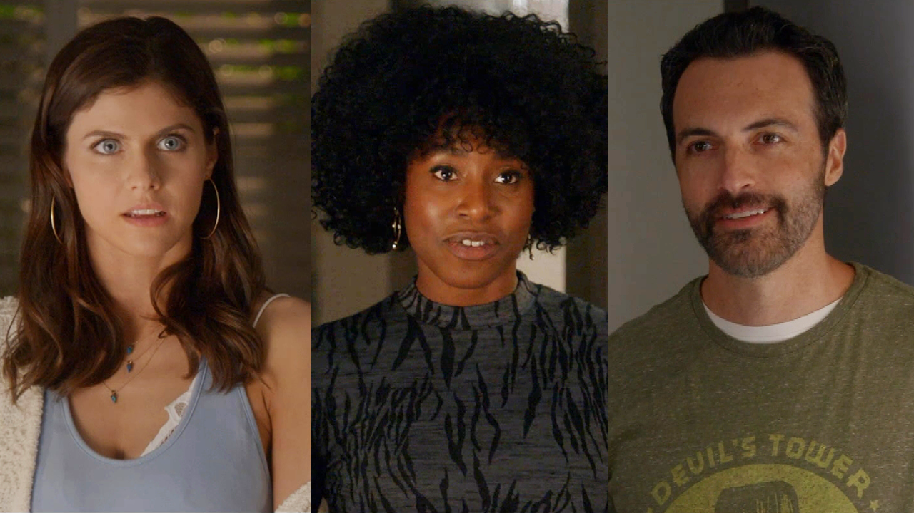
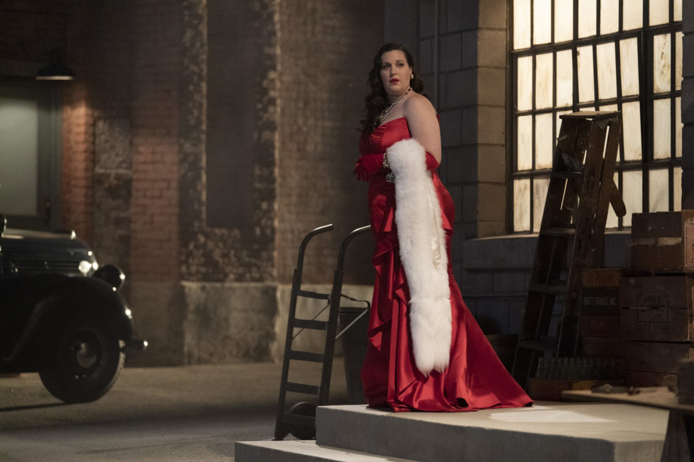
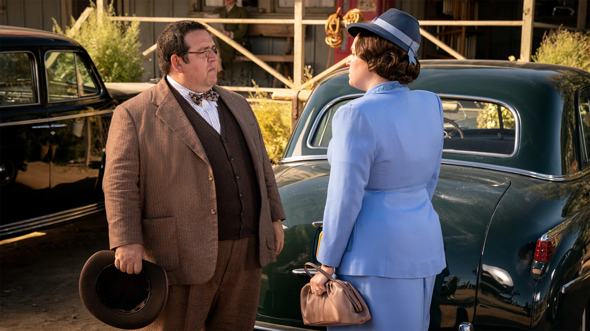
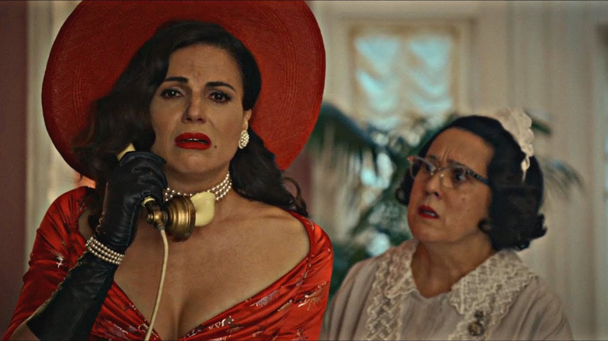
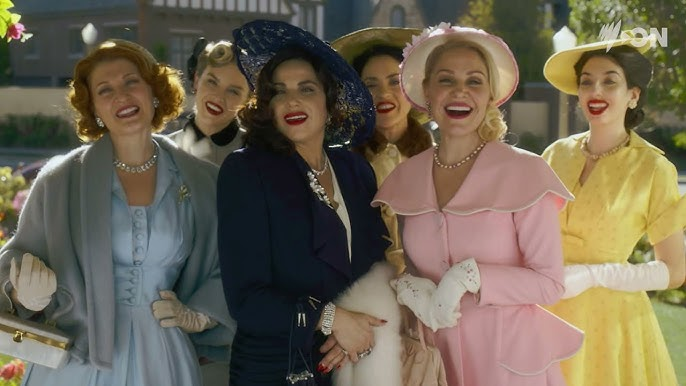

The plot of the series is built around the theme of marital infidelity and how
betrayal can lead to murder.
Plot Summary of Why Women Kill Seasons
Season
Main Characters & Timeline
Reason for Murder
Season 1
Beth Ann 1960s
A housewife discovers her husband's affair and faces a tragic
truth from the past.
Betrayal, jealousy,
emotional trauma
Simone 1980s
A glamorous socialite experiences a marriage crisis
and learns shocking secrets about her husband.
Season 2
Alma — a 1940s housewife
who dreams of joining high society.
Desire for status, power and recognition
Themes
Social ambition, secrets, hidden darkness behind perfect lives.
Manipulation
The series shows how different eras and relationships
can lead women to extreme decisions.
Season 1: Three Women, One House
The first season tells about women living in one mansion at three different times:
1963: Beth Ann and Rob Beth Ann tries to win her husband back by
befriending his lover April. However, she learns the terrible truth: their
common daughter did not die by accident (as she believed for years), but
because of Rob's negligence. Murder: Beth Ann decides not to kill
the ego with her own hands. She arranges the situation so that Rob is shot by
their armed abusive neighbor, who found out about his wife's (false) adultery
with Rob.

1984: Simona and Karl: Simona plans a divorce when she learns about
Karl's orientation, but her anger is replaced by sympathy when it turns out
that Karl has AIDS. Their story line is the most touching in the season: she
stays with him until the end, despite the condemnation of society and her
affair with Tommy. Murder: Formally, this is an assisted suicide.
When Karl becomes very ill, Simona helps him to leave his life in their home,
dancing the last dance with him.

2019: Taylor, Eli and Jade: Jade seems like the perfect "third" in the
couple's relationship, but it soon turns out that she is a dangerous sociopath
with a criminal past. She puts Ilya on drugs in order to control his money and
stay in the mansion. Murder: In the final fight in the house, Jade
attacks the couple with a knife. After a fierce fight, Taylor kills Jade,
protecting herself and Eli.

The action takes place in the same mansion in Pasadena, but in three different
decades. Each heroine learns about her husband's infidelity, which triggers a
chain of events leading to a fatal outcome.
Season 2: Price of recognition
The second season is a complete noir story, which takes place in 1949. The plot
revolves around the desire of the "little man" for power and recognition.
Main plot lines:
Dream of Alma Fillcot: Alma is an inconspicuous housewife who is
obsessed with the idea of joining the exclusive "Garden Club" for rich ladies.
She is sure that beautiful dresses and status will correct her gray life.

Bertram's secret: Alma's husband, veterinarian Bertram, seems perfect
until Alma finds the "trophies" (memorable witches) of his victims in his cache.
It turns out that he is a serial killer who believes that he saves suffering
people from being tortured.

Confrontation with Rita Castillo: Rita is the queen of the "Garden Club"
and the wife of rich old man Carlo. She is waiting for his death in order to
receive an inheritance and is having an affair with the young actor Scooter.
When Alma tries to fit into their world, she accidentally crosses Rita's path.

Family chaos: Dee, Alma's daughter, starts a secret affair with Scooter
and becomes pregnant. Catherine, Carlo's daughter, arrives to prevent Rita from
taking her father's money. Alma and Bertram are forced to commit new murders
to hide their previous sins.

The main conflict
If in the first season women killed because of betrayal, then in the second -
because of ambitions.
Gradually, meek Alma turns into a calculating monster, ready
to eliminate anyone (including friends and neighbors) who stands in her way to the
status of "first lady" of the club.